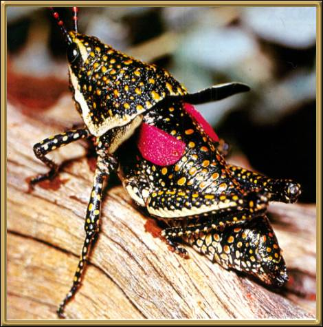

Photographer: Unknown
This is a very beautiful grasshopper, found, as its name implies, in the desert areas of Australia. They only appear after there has been relatively heavy rains. In Alice Springs, after the easter rains, it's almost impossible to walk anywhere without stepping on them.